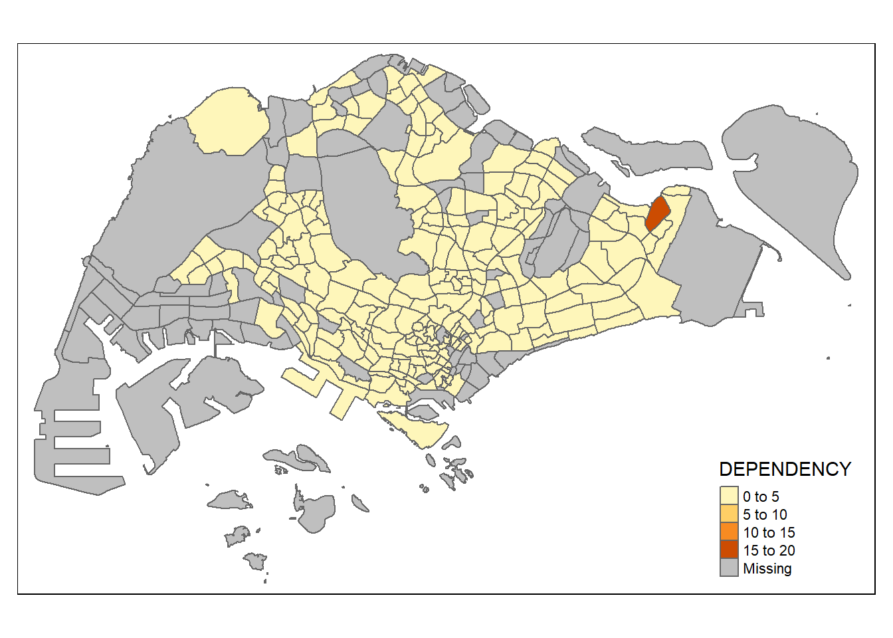

pacman::p_load(sf, tmap, tidyverse)Hands-on_Ex02:Thematic Mapping and GeoVisualisation with R
Loading relevant packages
Importing relevant map data
mpsz <- sf::st_read(dsn = "D:/Kabeer2003/IS415 - GAA/Hands-on_Ex/Hands-on_Ex01/data/geospatial")Reading layer `MP14_SUBZONE_NO_SEA_PL' from data source
`D:\Kabeer2003\IS415 - GAA\Hands-on_Ex\Hands-on_Ex01\data\geospatial'
using driver `ESRI Shapefile'
Simple feature collection with 323 features and 15 fields
Geometry type: MULTIPOLYGON
Dimension: XY
Bounding box: xmin: 2667.538 ymin: 15748.72 xmax: 56396.44 ymax: 50256.33
Projected CRS: SVY21mpszSimple feature collection with 323 features and 15 fields
Geometry type: MULTIPOLYGON
Dimension: XY
Bounding box: xmin: 2667.538 ymin: 15748.72 xmax: 56396.44 ymax: 50256.33
Projected CRS: SVY21
First 10 features:
OBJECTID SUBZONE_NO SUBZONE_N SUBZONE_C CA_IND PLN_AREA_N
1 1 2 PEOPLE'S PARK OTSZ02 Y OUTRAM
2 2 2 BUKIT MERAH BMSZ02 N BUKIT MERAH
3 3 3 CHINATOWN OTSZ03 Y OUTRAM
4 4 4 PHILLIP DTSZ04 Y DOWNTOWN CORE
5 5 5 RAFFLES PLACE DTSZ05 Y DOWNTOWN CORE
6 6 4 CHINA SQUARE OTSZ04 Y OUTRAM
7 7 10 TIONG BAHRU BMSZ10 N BUKIT MERAH
8 8 12 BAYFRONT SUBZONE DTSZ12 Y DOWNTOWN CORE
9 9 4 TIONG BAHRU STATION BMSZ04 N BUKIT MERAH
10 10 6 CLIFFORD PIER DTSZ06 Y DOWNTOWN CORE
PLN_AREA_C REGION_N REGION_C INC_CRC FMEL_UPD_D X_ADDR
1 OT CENTRAL REGION CR B4120D23006C932A 2016-05-11 28831.78
2 BM CENTRAL REGION CR 1C51019439A68700 2016-05-11 26360.80
3 OT CENTRAL REGION CR 0FF1661344C84AED 2016-05-11 29153.97
4 DT CENTRAL REGION CR 615D4EDDEF809F8E 2016-05-11 29706.72
5 DT CENTRAL REGION CR 72107B11807074F4 2016-05-11 29968.62
6 OT CENTRAL REGION CR B609DF5587626C8F 2016-05-11 29509.64
7 BM CENTRAL REGION CR A0FB4B68155D164A 2016-05-11 27785.67
8 DT CENTRAL REGION CR 197F5E664DA4D5E1 2016-05-11 30806.24
9 BM CENTRAL REGION CR 91FFE927ABE3E4DB 2016-05-11 27277.47
10 DT CENTRAL REGION CR 945CC212CA80626F 2016-05-11 30379.50
Y_ADDR SHAPE_Leng SHAPE_Area geometry
1 29419.65 1822.1927 93140.44 MULTIPOLYGON (((29099.02 29...
2 29384.14 3074.9632 411722.82 MULTIPOLYGON (((26750.09 29...
3 29158.04 4297.5999 587222.68 MULTIPOLYGON (((29161.2 297...
4 29744.91 871.5549 39437.94 MULTIPOLYGON (((29814.11 29...
5 29572.76 1872.7522 188767.49 MULTIPOLYGON (((30137.77 29...
6 29646.45 1605.2797 133006.94 MULTIPOLYGON (((29699.44 29...
7 29590.40 3303.2149 448127.58 MULTIPOLYGON (((27748.04 29...
8 29530.17 2897.1264 521200.52 MULTIPOLYGON (((30844.87 29...
9 29607.02 2506.6879 350787.56 MULTIPOLYGON (((27444.04 29...
10 29776.43 2405.9909 261843.90 MULTIPOLYGON (((30436.73 29...Reading Census Data (2020)
popdata <- read_csv("D:/Kabeer2003/IS415 - GAA/Hands-on_Ex/Hands-on_Ex02/data/aspatial/respopagesextod2011to2020.csv")Rows: 984656 Columns: 7
── Column specification ────────────────────────────────────────────────────────
Delimiter: ","
chr (5): PA, SZ, AG, Sex, TOD
dbl (2): Pop, Time
ℹ Use `spec()` to retrieve the full column specification for this data.
ℹ Specify the column types or set `show_col_types = FALSE` to quiet this message.Performing data transformation on census data
final_result <- popdata %>%
filter(across(any_of(c("Time")), ~. == 2020)) %>%
group_by(PA, SZ, AG) %>%
summarise(POP = sum(Pop)) %>%
ungroup() %>%
pivot_wider(names_from = AG, values_from = POP) %>%
mutate(YOUNG = rowSums(.[3:6]) + rowSums(.[12]),
`ECONOMY ACTIVE` = rowSums(.[7:11]) + rowSums(.[13:15]),
`AGED` = rowSums(.[16:21]),
`TOTAL` = rowSums(.[3:21]),
`DEPENDENCY` = (`YOUNG` + `AGED`) / `ECONOMY ACTIVE`) %>%
select(PA, SZ, YOUNG, `ECONOMY ACTIVE`, AGED, TOTAL, DEPENDENCY)Warning: Using `across()` in `filter()` was deprecated in dplyr 1.0.8.
ℹ Please use `if_any()` or `if_all()` instead.`summarise()` has grouped output by 'PA', 'SZ'. You can override using the
`.groups` argument.Joining attribute data with Geospatial data
popdata2020 <- final_result %>%
mutate_at(.vars = vars(PA, SZ),
.funs = list(toupper)) %>%
filter(`ECONOMY ACTIVE` > 0)mpsz_pop2020 <- left_join(mpsz, popdata2020,
by = c("SUBZONE_N" = "SZ"))Left join map with aspatial data
# Specify the directory path
directory_path <- "D:/Kabeer2003/IS415 - GAA/Hands-on_Ex/Hands-on_Ex02/data/rds/"
if (!dir.exists(directory_path)) {
dir.create(directory_path, recursive = TRUE)
}
write_rds(mpsz_pop2020, file.path(directory_path, "mpszpop2020.rds"))Plotting a choropleth map (Quick) using tmap
tmap_mode("plot")tmap mode set to plottingqtm(mpsz_pop2020,
fill = "DEPENDENCY")
Plotting a detailed choropleth map using tmap elements
tm_shape(mpsz_pop2020)+
tm_fill("DEPENDENCY",
style = "quantile",
palette = "Blues",
title = "Dependency ratio") +
tm_layout(main.title = "Distribution of Dependency Ratio by planning subzone",
main.title.position = "center",
main.title.size = 1.2,
legend.height = 0.5,
legend.width = 0.4,
frame = TRUE) +
tm_borders(alpha = 0.5) +
tm_compass(type="8star", size = 2) +
tm_scale_bar() +
tm_grid(alpha =0.2) +
tm_credits("Source: Planning Sub-zone boundary from Urban Redevelopment Authorithy (URA)\n and Population data from Department of Statistics DOS",
position = c("left", "bottom"))Drawing a map (Practice)
tm_shape(mpsz_pop2020) +
tm_polygons("DEPENDENCY", n = 5, style = "equal") +
tm_borders(alpha = 0.5)Warning: One tm layer group has duplicated layer types, which are omitted. To
draw multiple layers of the same type, use multiple layer groups (i.e. specify
tm_shape prior to each of them).Finding statistical summary (Quartiles) to accurately plot map
summary(mpsz_pop2020$DEPENDENCY) Min. 1st Qu. Median Mean 3rd Qu. Max. NA's
0.1111 0.7147 0.7866 0.8585 0.8763 19.0000 92 tm_shape(mpsz_pop2020)+
tm_fill("DEPENDENCY",n = 6,style = "quantile", palette = "-Blues") +
tm_borders(alpha = 0.5)tm_shape(mpsz_pop2020)+
tm_fill("DEPENDENCY",
style = "quantile",
palette = "Blues",
title = "No. of persons") +
tm_layout(main.title = "Distribution of Dependency Ratio \nby planning subzone",
main.title.position = "center",
main.title.size = 1.2,
legend.height = 0.45,
legend.width = 0.35,
frame = TRUE) +
tm_borders(alpha = 0.5) +
tm_compass(type="4star", size = 2) +
tm_scale_bar(width = 0.15) +
tm_grid(lwd = 0.1, alpha = 0.2) +
tm_credits("Source: Planning Sub-zone boundary from Urban Redevelopment Authorithy (URA)\n and Population data from Department of Statistics DOS",
position = c("left", "bottom"))Plotting individual choropleth maps for five regions of Singapore depicting the dependency ratio in each neighbourhood.
tm_shape(mpsz_pop2020) +
tm_fill("DEPENDENCY",
style = "quantile",
palette = "Blues",
thres.poly = 0) +
tm_facets(by="REGION_N",
free.coords=TRUE,
drop.shapes=TRUE) +
tm_layout(legend.show = FALSE,
title.position = c("center", "center"),
title.size = 20) +
tm_borders(alpha = 0.5)Warning: The argument drop.shapes has been renamed to drop.units, and is
therefore deprecated